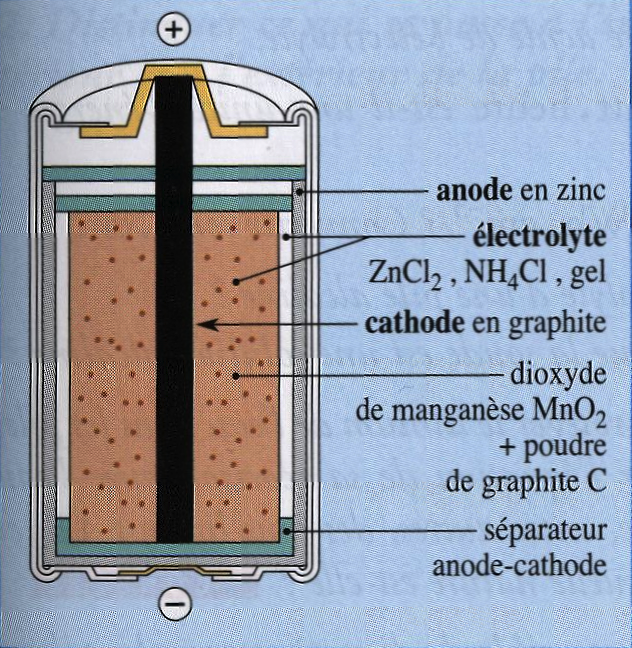
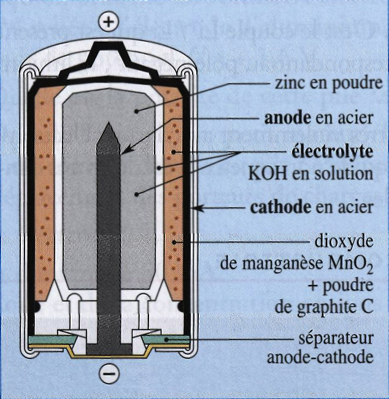
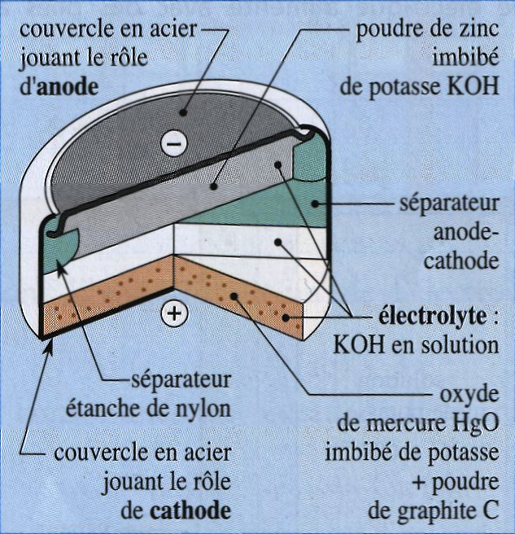
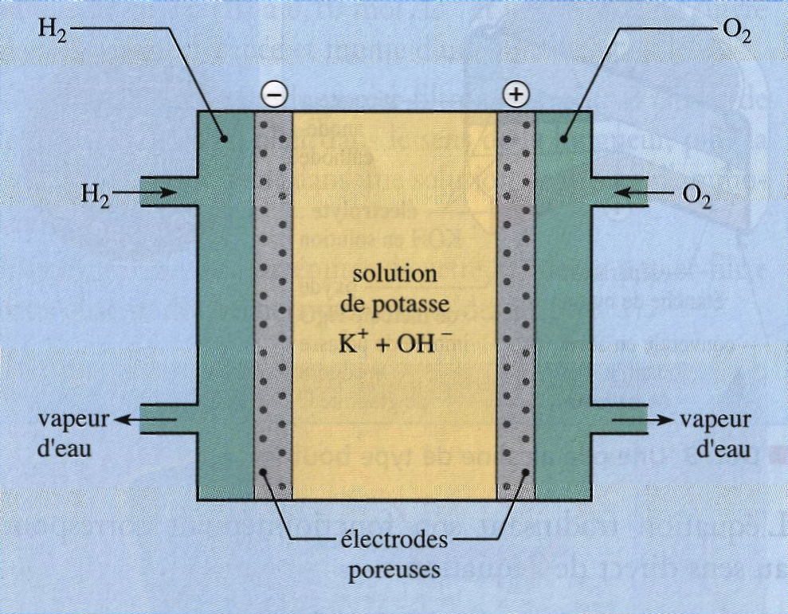

Les piles sont très diverses, faciles d’emploi et de faible coût. Leur format et leurs caractéristiques sont adaptés à leurs différentes utilisations.
Les piles salines ou piles Leclanché
Ce sont des piles peu coûteuses, adaptées aux utilisations intermittentes ne nécessitant pas une forte intensité : sonneries, lampes de poche, ... Leur f.e.m vaut $\pu{1,5 V}$ ; leur énergie volumique est de l’ordre de $\pu{0,18 W⋅h⋅cm-3}$. La constitution d’une pile Leclanché est décrite sur la figure ci-contre, son schéma conventionnel s’écrit : $$ \ce{Zn|Zn^{2+}} || \ce{NH4^+,Cl-} || \ce{MnO(OH)|MnO2} | \ce{C (s)} $$ Au pôle négatif de la pile, l’électrode de zinc est au contact d’une solution gélifiée de chlorure de zinc, $\ce{Zn^{2+} + 2 Cl^-}$, et de chlorure d’ammonium, $\ce{NH4^+ + Cl^-}$. Cette solution, contenant des ions autres que les ions oxonium et hydroxyde, est dite saline et donne son nom à la pile. Au pôle positif de la pile, l’électrode en graphite est entourée d’un mélange de dioxyde de manganèse $\ce{MnO2}$ et de carbone en poudre. Ce mélange est imbibé de la solution gélifiée de chlorure d’ammonium. Le pH de ce mélange est voisin de 4. Le carbone est un conducteur électrique qui permet aux électrons qui arrivent sur l’électrode de graphite de réduire le dioxyde de manganèse dans la masse du mélange et de l’utiliser en totalité.
La réaction de fonctionnement correspond au sens direct de l’équation : $$ \ce{ 2 MnO2 (s) + 2 H^+ (aq) + Zn (s) <=> 2 MnO(OH) (s) + Zn^{2+} } $$
Les piles alcalines
Les piles alcalines peuvent fournir, en courant continu, des intensités importantes. Elles peuvent donc être utilisées pour alimenter des baladeurs, des portables, ... Selon leur composition, leur f.e.m varie de $\pu{1,3 V}$ à $\pu{1,6 V}$ et leur énergie volumique de $\pu{0,24}$ à $\pu{0,50 W⋅h⋅cm-3}$.
Elles existent sous différents formats, tel que celui de la « pile bouton », décrit sur la figure ci-dessous.
Le schéma conventionnel de ces piles est : $$ \ce{Zn| [Zn(OH)4]^{2-}} || \ce{K^+,OH-} || \ce{HgO|Hg} | \ce{C (s)} $$
L’équation traduisant son fonctionnement correspond au sens direct de l’équation :
$$
\ce{ HgO (s) + 2 HO- (aq) + H2O + Zn (s) <=> Hg (l) + [Zn(OH)4 ]^{2-} (aq) }
$$

Ces piles contiennent une solution concentrée de potasse, $\ce{K+ + HO-}$. La potasse est une base contenant le cation $\ce{K+}$ issu du métal alcalin potassium $\ce{K}$. C’est la raison pour laquelle cette solution est dite alcaline. Par extension, les piles comportant un tel électrolyte sont dites alcalines.
La potasse concentrée est une solution très corrosive : il est donc très dangereux de démonter de telles piles.
Les piles au lithium
Les piles au lithium ont des propriétés remarquables, bien supérieures à celles des piles salines ou alcalines : une f.e.m de $\pu{3,5 V}$, une énergie volumique de $\pu{1,24 W⋅h⋅cm-3}$, un domaine de température de fonctionnement très étendu et une durée de vie qui peut aller jusqu’à 10 ans ! Elles sont ainsi utilisées dans les stimulateurs cardiaques. Le coût de ces piles est très élevé.
Le boîtier est en acier. C’est le couple $\ce{Li+/Li}$ qui est présent dans la demi-pile correspondant au pôle négatif, le lithium constituant l’électrode.
Le lithium réagissant très violemment avec l’eau, l’électrolyte est constitué d’un liquide non aqueux. Il est donc très dangereux d’ouvrir ces piles.
Les piles à combustible
Une pile à combustible est une pile continuellement alimentée en réactifs et dont les produits sont éliminés en continu. La production de l’électricité se fait grâce à l’oxydation sur une électrode d’un combustible réducteur (par exemple le dihydrogène) couplée à la réduction sur l’autre électrode d’un oxydant, tel que le dioxygène de l’air. La réaction d’oxydation de l’hydrogène est accélérée par un catalyseur qui est généralement du platine. Si d’autres combinaisons sont possibles, la pile la plus couramment étudiée et utilisée est la pile dihydrogène-dioxygène ou dihydrogène-air (ceci s’expliquant notamment par l’abondance des ressources en hydrogène sur Terre et la facilité de production du dihydrogène).
De telles piles sont utilisées dans les engins spatiaux. Cependant, leur alimentation soulève encore des problèmes. Des recherches se poursuivent car leur rendement élevé et leur faible pollution pourraient en faire des systèmes d’avenir.
La réaction de fonctionnement la plus fréquente de ces piles a pour équation : $$ \ce{ 2 H2 (g) + O2 (g) <=> 2 H2O (l) } $$
Questions
Compréhension du texte
- Qu’est-ce qu’une utilisation « intermittente » ?
- Que signifie l’expression : « liquide non aqueux » ?
- Définir « l’énergie volumique » d’une pile.
- Définir un électrolyte.
Exploitation du texte
Pile Leclanché
- Quel est l’électrolyte de la pile Leclanché ?
- Écrire les équations des réactions qui se produisent aux électrodes lors du fonctionnement de la pile.
- Préciser le sens de déplacement des porteurs de charges à l’intérieur de la pile.
- Justifier le caractère acide de l’électrolyte.
Énergie volumique
- Pourquoi le $\pu{watt⋅heure}$ est-il une unité d’énergie ?
- Que signifie $\pu{0,18 W⋅h⋅cm-3}$ ? Convertir cette valeur en $\pu{J⋅cm-3}$.
Pile alcaline
- Quel est l’électrolyte d’une pile alcaline ?
- Pourquoi dit-on que la soude est une solution alcaline ?
Pile au lithium
- Pourquoi doit-on protéger le lithium de l’eau dans les piles au lithium ? Donner l’équation de sa réaction avec l’eau sachant qu’il se forme, entre autres, des ions lithium (I) et du dihydrogène.
Quelle est la nature de cette réaction ?
Pile à combustible
- Citer une source possible de dioxygène pour les piles à combustible.
- Une pile à combustible au méthanol met en jeu les couples $\ce{CO3^{2-}/CH3OH}$ et $\ce{S2O8^{2-}/SO4^{2-}}$.
Donner les équations des réactions aux électrodes, sachant que la demi-pile relative au méthanol correspond au pôle négatif de cette pile et que l’électrolyte est constitué de potasse concentrée.